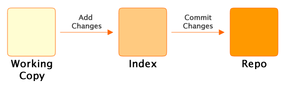
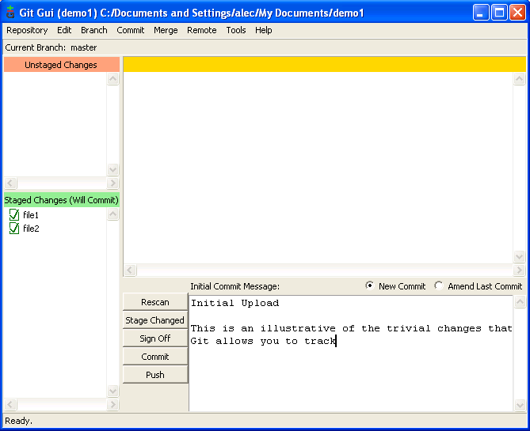
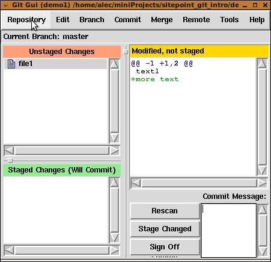

This article introduces version control and Git without assuming any prior knowledge or programming experience. Because of its introductory nature, certain details are simplified or omitted and the use of the Git Graphical User Interface (git-gui) is emphasised. Afterwards the reader should be able to use Git for basic version control and know where to locate further information.
Version control is the process of recording the history of changes to files as they are modified. Users can go back in time and get old versions and identify where changes were introduced (people sometimes refer to version control tools as time machines). This means that it's easier to:
The first version control (VC) tool, SCCS, was written in 1972 and since that time there have been major advances in the way VC tools are used. Git represents the current state of the art in that it is distributed. A distributed VC tool gives each user a complete history of all changes to the files on which they work. So, for instance, it's possible to look at previous versions of files while flying across the Pacific (assuming your laptop battery lasts). Later, when you touch down, all changes can be merged together over the computer network for release or further work. This may sound complicated, but the tool makes it relatively easy and error free.
Other well know VC tools, for example Subversion, are classed as centralised and provide only a single place, the repository, into which users store their changes on a regular basis. In this model users do not have a personal copy of the change history, they only have the set of the files they currently working with.
Git runs on Windows, Mac OS X, Linux and UNIX. It was developed by Linus Torvalds, the lead developer of Linux, in 2005 to answer the needs of the his development community. As well as a powerful tool for the individual developer, it provides a powerful model for cooperation. Community source code sharing sites like GitHub and Gitorious make full use of its capabilities.Git maintains a database of all previous file versions in a repository (repo in geek speak) and it is usually located in a directory called .git. In UNIX-style systems (like Mac OS X and Linux) names that begin with a . are hidden by default so the repo is not usually visible during normal work (except on Windows). As well as the contents of the files and directory versions the repo contains additional housekeeping information about current work, other remote repositories we are sharing with, current settings and so on. In Git we have a separate repo for each of our projects.
In addition to the repo each project will have a set of files that are we are working on and editing. As we complete changes to our working files we add the changes to the repo; this is called commiting changes. In actual fact we are not fully committed to our changes as we can always retrieve old versions and make changes to the changes. We can also get a summary of our work against previous versions to see what we have done so far. The set of files we are currently working is called the working copy. We can easily change the working copy to a different version whenever we want.
Before progressing any further let's install Git and set up a small test repo to work with.
If you use Linux then installing should be a simple matter of using your package manager to install git (and possibly git-gui if it is a separate package). For Mac OS X either use the Git OSX Installer or you can use Mac Ports. Windows users who use Cygwin can use the Git from Cygwin; just use the Cygwin package manger to install the appropriate packages. Otherwise Windows users should use the the native Windows Git package: msysgit (you'll want to download the Git.1.6.nnnnnn.exe NOT the msysGit file).
NEEDS WORK!On many platforms graphical editors (for example gvim) will spawn a window for editing the commit message and return control immediately to the calling program (i.e. Git) without waiting for the user to complete the edit. In such cases you need to add an editor command option or make an editor configuration change (for instance on my laptopSpecial Notes for Windows Users using msysgit
If you do not use Cygwin or Putty, then accept all defaults during the install. You may care to make a single change to select "Run Git from the Windows Command Prompt"
If you want to use Git from the command line (which is much easier once you are used to it) then set up the GIT_EDITOR environment string to point to a text editor that can handle UNIX format text files. For instance for Notepad++ type the following "set GIT_EDITOR=c:\Progra~1\Notepad++\notepad++.exe" (note the lack of spaces in the path string) or add it permanently to the environment. This will be the editor used to create your commit messages, more on that later. Note that Windows Notepad is inadequate to the task.
There are more notes for Windows users here and here.
GIT_EDITOR has the
value "/usr/bin/gvim --nofork")The quickest way to get started is to use the git-gui client. If you use Windows you'll find Git GUI on your Start menu, otherwise you can type the command git gui at a the command prompt. You'll see a screen similar to this:
Select Create New Repository and enter a the name of a new directory. Git will create the directory and initialize an empty repo. Alternatively, create a project directory, and then from within the new directory enter the following from the command prompt:
$ git initIf you're on Mac OS X or Linux you can just use the standard terminal. If you're on Windows and you've installed the msysGit package, then you will find the Git Bash item on your start menu. This will launch a special command prompt for using git. You don't actually enter the $, that represents the command prompt, enter in everything after it.
You should then see a message like the following:
Initialized empty Git repository in /path/to/your/directory/.git/If you look in the project directory you should see a directory named .git (On Mac OS X or Linux you will need to use the command ls -A to show the hidden .git directory) In your newly created project directory create some new text files using your favourite editor. You now have some changes that are not under version control, in Git these are called unstaged. In Git GUI they look should like this:
You can get the same information from the command line with the command git status.
Now for a little diversion before we add our files to the repository: the Git index.
Git is a little different to most VC tools in that adding changes to a repo is a two stage process. All changes are staged in the index, before they are committed into the repo.
The index allows us to add, remove and modify changes on the way to building a commit. Whilst the index seems confusing and unnecessary at first it is useful for a variety of reasons:
Whenever we have file changes the git add command is used to add the content to the index. As well as
add there is also the git rm command to remove files and the git mv file to move or rename files. Once we have added the appropriate changes to the index we can commit changes to the repo.
Before using Git we need to tell Git who we are; our name and email address. From the Git GUI interface select Edit > Options and fill in the top two fields under Global. leave all the other values as they are

$ git config --global user.name "Alec Clews"
$ git config --global user.email "alec.clews@voga.com.au"Now we can add our changes to the index and commit them to the repository. First select both files on the "Unstaged Changes" pane.

Then select Commit > Stage To Commit (ctrl+t). The display then changes to show that we have no changes waiting to be staged, but we do have changes to be committed.
 Alternatively you can run the following command
Alternatively you can run the following command
$ git add file1 file2You can also use the following if you don't need to specify which files to add:
$ git add .Now that our files are staged, we can commit our first changes to the repo. Each time we make a commit, Git expects an informational message that gets added as part of the commit -- if you don't provide message no commit will be made. Generally we add a single line description and then a more detailed message. Click the Commit button and the changes are committed to the repo.
$ git commit -m "A message about your changes"If you don't use the -m switch to add a message, Git will launch the text editor ViM for you. ViM can be a little bit confusing, but here's a quick cheat sheet. Hit i to enter insert mode, type in your message, hit esc to leave insert mode and then shift+ZZ to save and close. CHECK THIS
Now that we have made a commit, the latest version in the repo -- called HEAD -- is the same as the contents of the working files. Running the command git status should show the message:
$ git status
# On branch master
nothing to commit (working directory clean)We can always refer to the contents of the last commit as HEAD and the contents of the commit prior to that as HEAD^1 (and HEAD^2 for the commit prior to that, and so on). However that quickly gets error prone and hard to use, so Git gives each commit a special id which is an apparently random string of 40 characters called the sha1 hash, which looks a like this: a90973cbe16d5a0cf4fcd5cca659f4a4587d7cb5.
Whilst it does not look very user friendly every commit across the world has a unique sha1 hash and when you come to share your history with other Git users (for instance other members of the web team) it is a unique way to refer to your work and it's history. If two users have the same sha1 in their repo then they are referring to the same piece of work. In practice humans can usually just refer to the last few unique digits in the sha1 to uniquely identify a commit.
As a user you will generally only see a sha1 hash used to represent a commit, however 'under the covers' the hash is used to identify files and directories (trees in Git terminology), and other objects. This has an interesting, and highly desirable, effect. When you rename a file (or move it in the directory tree) its sha1 hash does not change, but the tree that refers to the file and its name does. This means that Git can track changes and moves far more easily than tools such as Subversion.
Now, lets make another change. Pretend you've done some work and make a change to one of the files. Git GUI will show you the changes:
You can also run the command git diff to show the changes in your terminal window. We can continue to add and commit changes as before.
To view the history of commits to a project you can use the command git log. Git also has a second GUI application called gitk to that displays the history of commits in a graphical format. In Git GUI select Repository > Visualize All Branch History.

One of Git's most powerful features is support for easy branching and merging of files. If you look back over the previous examples you will see references to master. This is the name of default branch and every time we had changes they will be added to the history of the master branch. However often life does not proceed in a straight line -- we have to jump around and work on different versions of our project. Git makes this a lot easier than you would think.
Suppose we have a web site which is currently in production. That work will be maintained on the master branch as the current production release; the working web site. We now have to prepare new changes for the next release of the web site and also fix issues that came up in that last production release. (and probably a million other things as well!)
We can do represent this in Git by having three branches:
master: what is in production or about to the released to productiondevelopment: our new set of features for the next release; we'll call this one rel_2maintenance: a copy of master that was previously released to production that we use to make and test immediate fixes to the live site> mkdir demo2... edit index.html... test.... test...
> cd demo2
> git init
> git add .
> git commit -m "Initial Production version"
> git status
# On branch master
nothing to commit (working directory clean)
> cd demo2There are now two branches -- any changes on one branch are independent of the history recorded on the branch. We can list the branches like this
> git branch "rel_2"
> git branch
* master
rel_2
> git checkout rel_2
Switched to branch 'rel_2'
> git branch
master
* rel_2

> git diff
diff --git a/index.html b/index.html
index 800b514..dd9ef86 100644
--- a/index.html
+++ b/index.html
@@ -4,5 +4,7 @@
</head>
<body>
hello world<br>
+<br>
+and goodbye as well<br>
</body>
</html>
> git commit -a -m "say goodbye"
[rel_2 0015d91] say goodbye
1 files changed, 2 insertions(+), 0 deletions(-)
$git log
commit 0015d91c6d24f6d43627bf45af82ee2085fbfc5d
Author: Alec Clews <alec.clews@voga.com.au>
Date: Wed Jul 29 09:38:51 2009 +1000
say goodbye
commit e74e1271907baf14a4cd5c2d7724373face011d6
Author: Alec Clews <alec.clews@voga.com.au>
Date: Mon Jul 27 22:05:06 2009 +1000
Initial Production version

>git checkout master
Switched to branch 'master'
> cat index.html
<!DOCTYPE HTML PUBLIC "-//W3C//DTD HTML 4.01 Transitional//EN">
<html>
<head>
</head>
<body>
hello world<br>
</body>
</html>
> git branch prod_support
> git checkout prod_support
Switched to branch 'prod_support'
> git branch
master
* prod_support
rel_2
>gitk --all

>git checkout master
>git merge prod_support -m "Update prod with fixed from support"

>git checkout rel_2